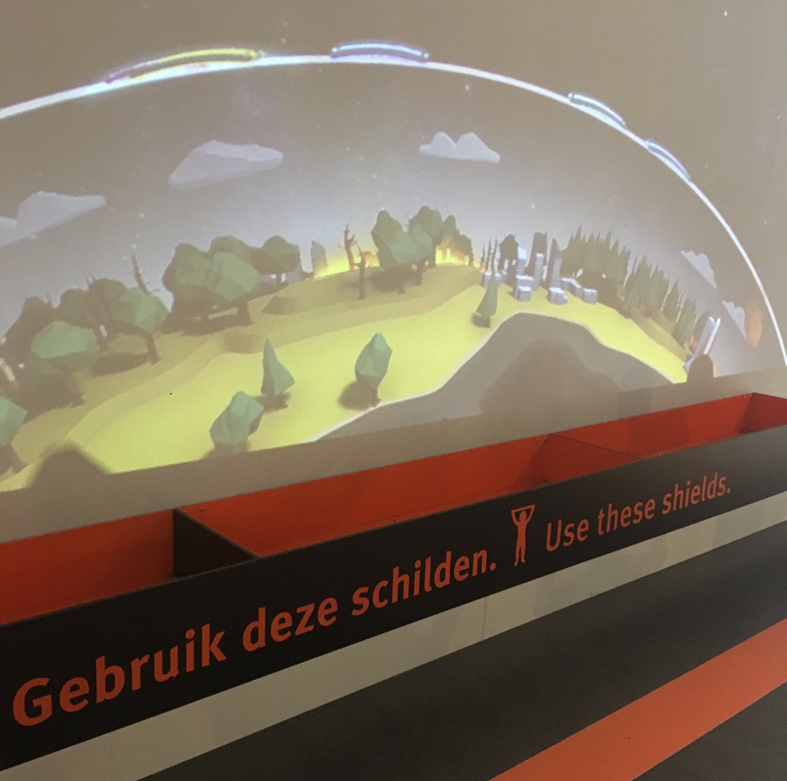
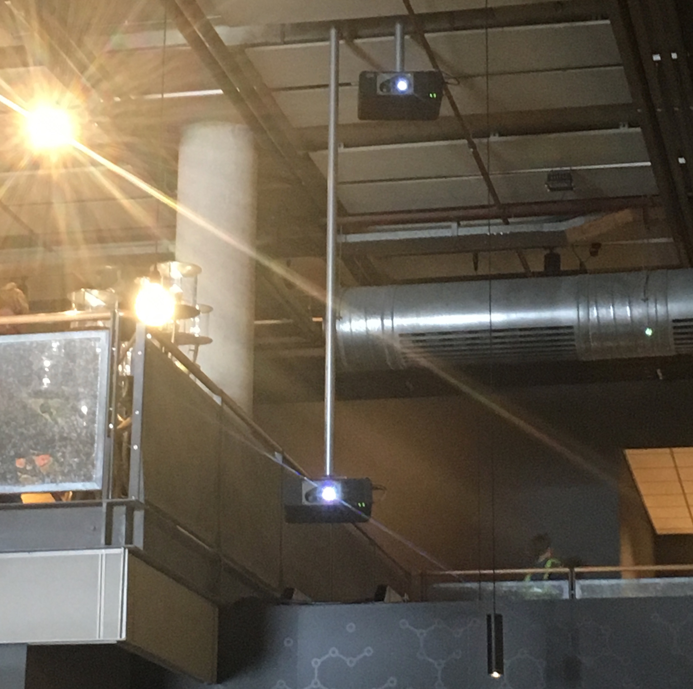
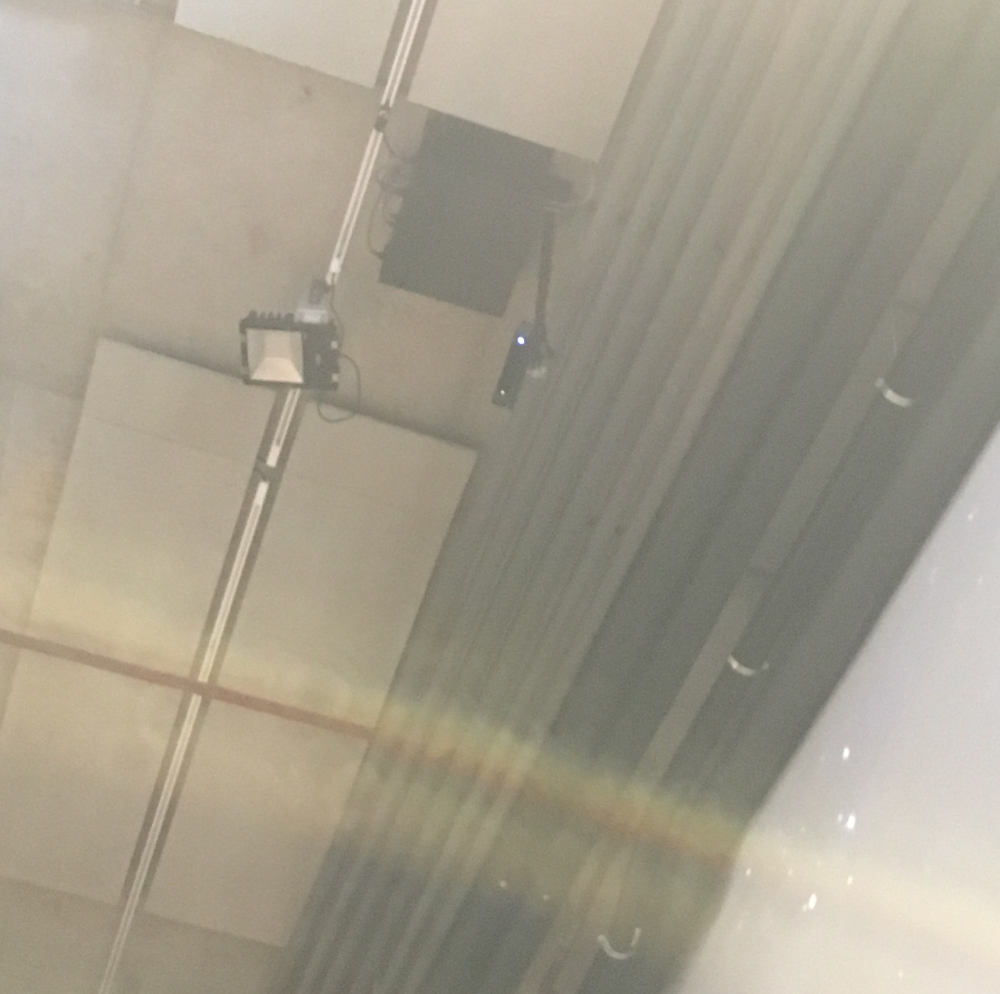
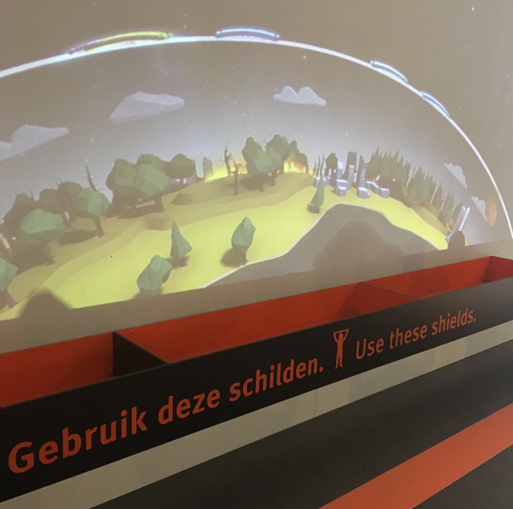
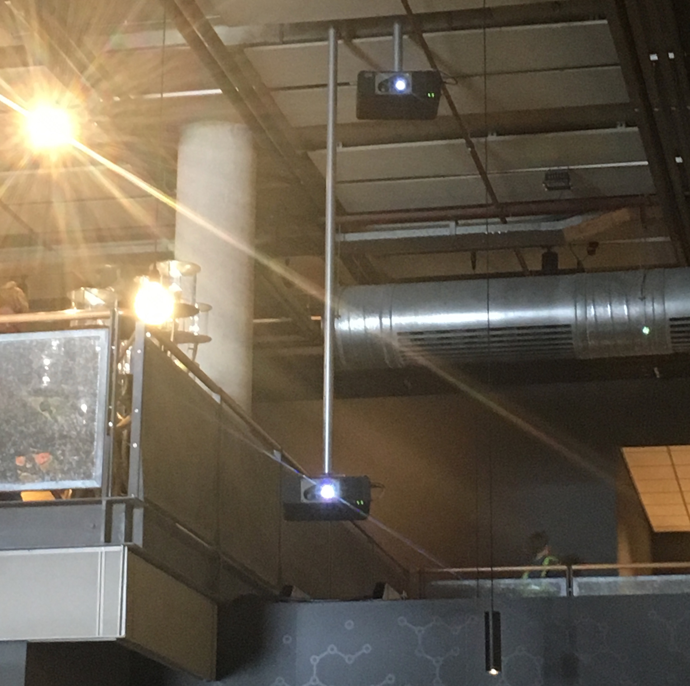
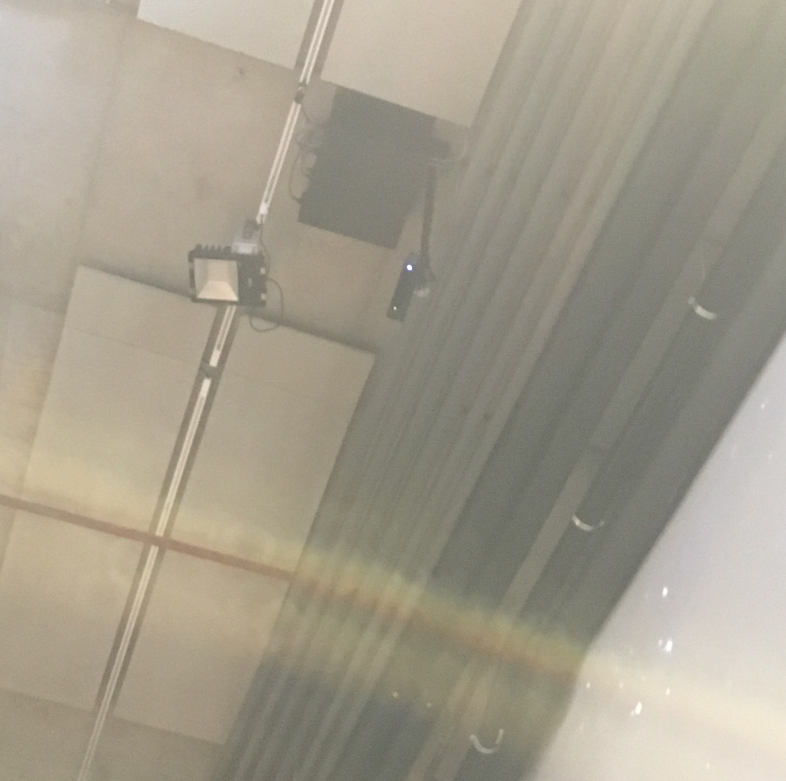

EXCURSIE - NEMO SCIENCE MUSEUM
Op maandag 27 mei 2019 ben ik naar het museum NEMO in Amsterdam geweest. NEMO is een wetenschap en technologiemuseum voor jongeren (voornamelijk voor kinderen). In NEMO ga je zelf ontdekken hoe de experimenten/installaties werken. Door middel van leuke experimenten wil het museum jongeren enthousiast maken voor wetenschap en techniek.
Dat NEMO voornamelijk voor kinderen is was niet gelogen, het museum was bomvol met kinderen van de 6 to 8 jaar! Hierdoor was het wel lastig om duidelijk te zien wat er allemaal was, want bij elke installatie en objecten stond een groep kinderen.
Opdracht
Naast het bekijken van alle leuke installaties in NEMO, hadden we ook nog een opdracht van school gekregen. De opdracht was om een installatie te vinden, die technologisch het meest interessant is. Hier wordt een klein verslagje geschreven over de installtie, hoe deze werk en welke sensoren worden gebruikt.
Na een tijdje rondlopen had ik uiteindelijk gekozen voor de installatie "Bescherm de Aarde!" (ook wel "Protect earth!").
De installatie "Bescherm de Aarde!" is een spel waarbij de gebruiker de dampkring is. Tijdens het spel vallen er meteorieten, kometen, UV-stralingen en zonnewinden uit het helaal op de aarde. De bedoeling is dat je deze objecten tegenhoudt door middel van een (fysieke) schild die de speler kan besturen. Je moet het schild op de juiste plek houden tijdens het spelen, je moet namelijk de objecten blokkeren zodat ze de aarde niet vernietigen.
Het doel van deze installatie is door middel van een speelse manier kinderen te leren dat de dampkring niet dunner mag worden en moet worden beschermd, want anders is de aarde niet goed beschermd.
De installatie hoort bij het onderwerp: playful interaction. Er wordt gebruik gemaakt van een beamer. Deze beamer projecteert op de muur. De projectie is ongeveer 7 meter hoog. Op het plafon hangt een bewegingssensoor, die decteert de (fysieke) schilden en laat het systeem weten waar welk bord is. Vervolgens wordt het bord digitaal geprojecteerd op de muur. De schilden bevatten een reflecterend materiaal, die niet met het blote oog te zien is. De bewegingssensoor pikt het reflecterend materiaal op. Het schild moet wel recht liggen, anders pikt de sensor soms het signaal niet op en verdwijnt het schild van de projectie.
Deze installatie vond ik het meest interessants, omdat je met meedere sensoren en beamers een spel kan bouwen. Daarnaast zorgt de installatie voor veel interactiviteit tussen het spel en de speler. Het spel is niet moeilijk, iedereen begrijpt wel wat hij moet doen. De boodschap die er achter zit wordt op een leuke en interessante manier overgebracht.
 




